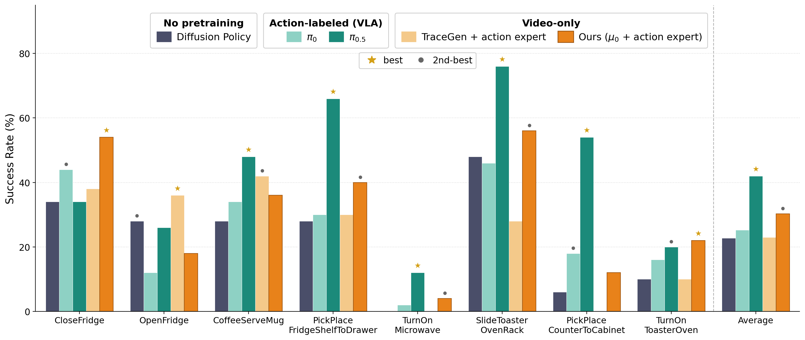
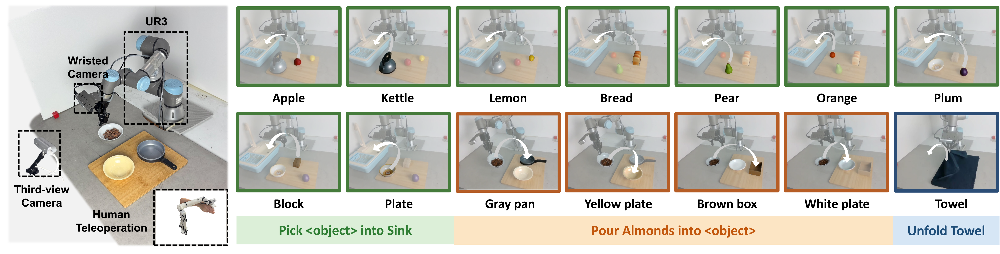
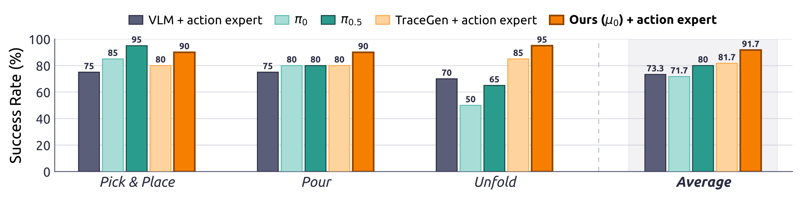

Results
1. Trace Prediction Quality
1.1 Baseline Comparison
Qualitative comparison of predicted traces from μ0 against trace-prediction baselines.
Input
Ground Truth
Prediction
1.2 Interactive 3D Visualization
Interactive 3D trace predictions from μ0. Drag to orbit, scroll to zoom. The input frame is shown in the top-left; predicted trajectories are colored by time (purple → red). Pick a sample below.
2. Simulation (RoboCasa365)
μ0 + action expert reaches 30.25% average success across 8 RoboCasa365 tasks, outperforming π0 by 5.0 points and TraceGen + action expert by 7.25 points despite relying solely on video-only pretraining.

Simulation results in RoboCasa365. Success rates (%) on 8 representative RoboCasa365 tasks.
3. Real-World Evaluation

Real-world experimental setup and task visualizations. The setup includes a UR3 robot arm with a two-finger gripper and the three real-world manipulation tasks used for evaluation.
Sample Execution Videos by Task
Real-robot rollouts, speed up 5×.
VLM + action expert
π0
π0.5
TraceGen + action expert
Ours (μ0) + action expert

Real-world evaluation results. Bar charts show average success rates (%) for three in-distribution UR3 manipulation tasks. Pick & Place and Pour are averaged over multiple objects.